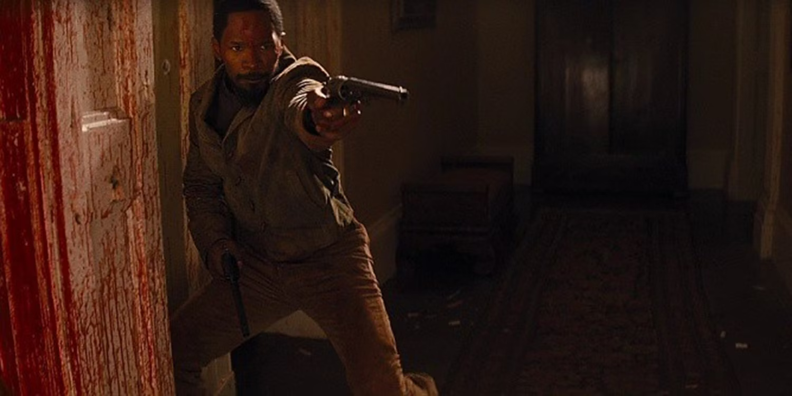

Django: Unchained (Desencadenado): es una película basada en el año 1858 protagonizada por Jamie Foxx y dirigida por Quientin Tarantino.
Año: 2012
Director: Quentin Tarantino
MEJORES MOMENTOS
Dr. Schultz mata al sheriff del pueblo
En esta escena el Dr. Schultz y Django se acercan a la taberna de un pueblo cercano para tomar algo.
El tabernero ve a Django (un negro) por lo que llama a las autoridades. El Dr.Schultz mata al sheriff del pueblo ya que era un criminal buscado por la justicia,
y por ello recibe una recompensa de 200$ del marshal.
Todo el pueblo observando la discusión entre el Dr. Schultz y el tabernero con el sheriff tiroteado en el suelo.
Tiroteo final en la mansión de "Monsieur" Calvin J. Candie
En esta escena Django se libera de nuevo de unos esclavistas hablándoles sobre una recompensa, pero esto es mentira, y acaba matándolos y robándoles la dinamita con la que vuelve a la mansión de Calvin Candie para salvar a su prometida Broomhilda y asesinar a todos los secuaces de Candie con dos pistolas.

Django en medio de una pelea en la mansión Candie.